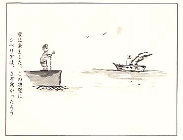

|
第二十六 修羅場の船路
やがて乗船順に寝場所へ案内された。広い
船倉は、中央が空洞になっていて、その周り
が船底から二段に仕切られていた。各段が座
席兼寝場所になっていた。
私は二段日の艦の方に指定された席につい
た。二段日の中央は、ガラーンと空席になっ
ていた。
帰還乗船人員は、約千人位だった。殆んど
の人が指定席につくと、大切に携行してきた
毛布を被って横になった。
長時間の緊張と、引き返し命令の心配から
やっと解放されて、全身の力が抜けてしまい、
安堵感に痩っていた。
うとうとと睡っていたら、船内放送が流れ
てきた。何年振りかに聞く懐しい日本女性の
声だった。
「みなさん、長い間ご苦労さまでございま
した。
本船はみなさまの帰還輸送に就航していま
す興安丸でございます。
本船はナホトカ港を午後四時に出港しまし
た。三日後の午前中に、舞鶴港に入港の予定
でございます。
天気予報では、曇のち晴、風は静かで海上
は平穏な航海日和とのことであります。どな
たさまも、船内でゆっくりお休みください」
優しい懐しい日本人女性の放送の声を聞いて
胸が熱くなった。
船内ではあちこちで、談笑が始まった。ソ
連マダムと日本女性の比較談議もあって、ワ
アッと笑い声があがった頃、また放送が流れ
た。
「本船では、只今から皆様に夕食を差し上
げます。船室の都合で司厨係が順次廻って配
膳します。」
四年振りに食べる日本料理だ、どんな配膳
があるのか、ウズウズして食欲をそそった。
配膳されたのは、アルミ皿に白米の炊きたて
が盛られて、別の皿には鯵と野菜の煮付けが
盛られていた。
「うめえな－、これで一本ついたら、死ん
でもいいぜ。」
満腹して冗談も飛び、賑やかな夕食が済ん
だ。今まで粥食ばかりだったので、御馳走に
胃袋がびっくりして、胸が焼けてきた。餓鬼
道に墜ちていた人間が普通食に馴れるまでは、
時間がかかりそうだ。食後の一刻、人の心が
落ちついた頃だった。二段目の余った席の板
張りに、五～六人の古参兵が、何か協議を始
めた。その内の一人が、ドスの利いた声で、
「みなさん聞いてくれィ、この乗船仲間に
今まで民主連盟員、共産主義者、アクチブ等
と称していた者が、多数紛れ込んでいること
は、もうぼくらは調査済みだ。
その諸君に対し、話し度いことがある。民
主連盟の関係者は、二段目中央の板張りまで、
出て釆てくれィッ。」
船内は水を打ったように静まり返った。しか
しこの言葉に応じて出て来る者は一人もいな
かった。すると凄みのある男は、
「なぜ出れんのか、怖気が付いたか、偽共
産主義者共…。」
今度は別の男が怒鳴った。
「将校の中にも偽主義者がおるではないか、
堂々と出てきたらどうだ。」
外の三人の男も、
「われわれは、調査すみだぞ、逃げ隠れは
もうできないぞ。」
と一段と威圧を加えたのだった。この時一
段目にいた中年兵が、
「おれも連盟員と称する者達へ、言うこと
があるのだ。何も怖れることはない筈だ、ソ
連にいたときの、あの革命の大言壮語の勇気
は、なくなったか、革命分子らしい行動が、
できないで、何の革命か！！」
民主連盟員達は、最悪の事能となったと、
躊躇し慌てたが、覚悟して船倉各段から、一
人また一人と続いて板張りに集まった。
例の凄みを見せた男は、
「まだ大勢いる筈だ、全員顔を揃えろ、今
からソ連民主連盟員達が、シベリア各地でや
った人民裁判の日本版をやる。
共産主義者と称するからには、良心に恥ず
ることはないだろう。諸君等の主義主張を述
べる機会を与えてやるのだ。卑怯者は去って
も、我等は決して見逃しはしないぞ。」
この挑戦に誘われて、連盟員達がぞろぞろ
と板張りに出てきた。頃を見計らって、例の
男は、
「お前等の主義主張は、お前等で自由勝手
にするがよい。しかしお前らは手前勝手の言
い分で、我等戦友を、ソ連側と同調して、強
制労働に狩り出した。その上ソ連の尻馬に乗
って、苛酷なノルマ労働に使役して、同胞戦
友を殺した罪の償いは、一体どうするつもり
か、責任ある回答をしろ。」
と迫った。
居並ぶ共産主義者達十六名の内の一人が、
「私達は、ソ連共産主義の考え方が正しい
と学習したからです。またあんなにしなけれ
ば、帰して貰えないと思ったからです。」
船倉の聴衆は次第に興奮して、その場の空
気は熱気を帯びてきた。聴衆の中から、
「馬鹿野郎！自分だけソ連側に良い子にな
って、人より余計にパンを喰らう魂胆からだ
ったろうが、白状せい。
お前らは、餓死した同僚のパンまで、掻っ
払って喰らったろが、お前らはみな盗人だぞ！
そうして戦友をソ連に売り渡した売国奴だぞ」
「そうだ、そうだ、盗人だ、売国奴だ！」
人民裁判の告発者は、次々と交代した。
「お前らは、ソ連共産主義者になって、
「祖国はソ連だ」と絶叫した者ばかりだ。今
更日本に帰る必要はないだろう。祖国ソ連に
帰れ。」
「そうだ、そうだ、彼奴等は全員海に放り
込め、帰すな－。」
共産主義者達は、一斉に抗弁した。
「われわれは、ソ連民主主義体制は、平和
を守る社会、平等差別のない社会として、こ
れを正しいと学習させられたのです。今でも
そう信じています。
日本に帰って、ソ連体制の正しい民主主義
社会の実態を伝えて、日本の革命運動に参加
するため、日本共産党に入党する覚悟であり
ます。」
例の男は、
「それでは、お前らはソ連と結託して、多
くの戦友をソ連の生産競争に狩り出して、こ
の為過労に弊れた戦友は、皆お前らが殺した
も同然だが、それでも責任はとらぬと云うの
だな－、ソ連体制が正しいと云い張るか！」
「ソ連の生産競争に加担したのは、ソ連が
偉大な富強国家になるためです。ソ連が富強
国家になることは、即ち世界平和と発展につ
ながるのです。日本人民も豊かになり、日本
の平和が保たれます。ソ連に隷属しても、日
本が豊かで、平和でありさえすれば、その方
がどれだけ幸せか分りません。」
聴衆は激昂して、主義者を難詰した。
「お前ら主義者は屁にもならんご託宣を並
べ立て、同じ仲間を飢えと過労で殺し、隣人を
地獄に落した。その反省の色なしにだ。ソ連
の後押しを笠に来て胡坐をかき、てめえら
だけは、仕事をサボり贅沢な食物を飽食して、
多くの戦友を殺しても、ソ連に隷属して、
幸せで豊かになると云うか、戦友同僚の怨念
を晴らしてやるぞ、覚悟せい。」
板張りの囲いりに座って裁判を傍聴していた
聴衆は、一斉に主義者達に襲いかかった。
「怨念を晴してやるぞ。！！」
と喚きながら、主義者達の襟髪を掴み、殴
る蹴るの大乱闘となった。
主義者達も必死で抵抗したが、多勢に無勢
袋叩きにされて意識不明の重態となり、板張
りに団子のようになって転がった。
民主連盟員から苛められて、不当の過重労
働に泣いた者は、怨の一太刀を浴びせん、もの
と、何処からか机の脚を外して来て、転がる
連盟員の脳天を一撃して回った。
板張の床は、鮮血と血糊で彩られて滑った。
告発した男の一味は、返り血を浴びて、鬼
神の相となり、一段と凄味のある声を張り上
げた。
「まだ連盟員とか、共産主義者とかと称し
て、シベリア各地で我等に君臨していた者が
おるであろうが、
お前らの前衛同志が、こんな目に遭ってい
るのに、何故同志を助けに来ないのか、共
産主義者全員が来るまでは、この闘いは止め
ないぞ。」
外の主義者や連盟員等は、最早頬冠りはで
きなかった。バラバラと五～六名演台に上っ
た。
民主連盟の指導をしていたと称する古谷少
尉は、乱闘の中に割って入り、制止しようと
した。
「諸君 暴力は止めてくれ。われわれが、
ソ連民主主義になったのは、日本の天皇制
軍国主義が、如何にソ連民主主義に比べて、
愚劣で、罪悪であったかと学習したからだ。
ソ連で我等が執った仕打ちは、深く反省し
て詫びる。しかしソ連で学習した民主主義の
理念は、今でも人民の幸せの道だと信じてい
る。みなは、そうは思わないか。」
彼は民主連盟員の地区指導員であり、共産
学校を修了して、地区オルグであったことは、
大方知っていた。我等のナホトカ港に於ける
思想評価点を、密かに朝鮮人通訳に内報して
いた元兇は、彼だと判っていた。
彼は白パンの特配を受け、何時も将校服の
新品同様のものを着用し、支配階級の身形を
していた。同じ将校仲間でも入ソ半歳日頃に
は、夏服は返上して一般兵のポロ冬服と取り
替えていたので、彼の身形を見ただけで、特
別の待遇を受けている者とわかった。
人の話では、彼は平常は滅多に人とは口も
利かず、冗談も言わなかったらしい。どちら
かと言えばユダヤ系日本人とも云うべき人間
だ。
傍聴席から弥次と罵声が飛んだ。
「馬鹿野郎め！お前は将校でありながら、
自己保身からソ連に取り入り、てまえだけが
甘い汁を吸おうとする利己主義者だ。ソ連で
はスターリン憲法に、
「働かざる者は食うべがらず。」
とある。てめえは作業にも出ず、ソ連所長
に日本停虜を売りつけ、所長のノルマ稼ぎに、
日本人俘虜を使いまくったのだ。自分を正当
化するため思想信条は、何とでも言え、我等
を食いものにした罪は、絶体に許さんぞ。屁
理屈は通らんぞ。」
「そうだ、そうだ、反省の色もなく人民の
倖せだなど欺瞞だ、虚言だ、もう騙されんぞ。」
鉄棒の様な棒切れを握った男が、大衆の中
を潜り抜けて、いきなり古谷少尉の首筋を
殺ぐようになぐつた。皮が剥がれて鼻の穴か
ら、鮮血が流れ落ちた。
「民主連盟員の指導者はまだいるぞ、あす
こに隠れている将校とその仲間二人がいるぞ。」
大衆の視線は、指差された三人を射た。す
ると大衆の中から痩せこけて、頬骨の尖った
男が、
「あれは元将校だ。」
と叫び演台に割って入り、裁判廷に立った。
「おおい！その隠れている将校と云うのは、
竹村、お前のことだ。お前の部下でサマルカ
ンドのラーゲルで死んだ厨林一等兵の遺髪か
遺品か何か持ってきたか。
お前がノルマに狩り出して飢え死させた部
下の遺品だよ、戦場では部下を殺し、俘虜に
なったらソ連と手を組んで部下を殺し、それ
でも天皇陛下の将校と云うか。」
竹村少尉はブルブル震えながら、
「何も遺品はない。遺品も遺髪もそのよう
な物は、一切持ち帰りを禁じられたから、已
むを得ない。」
「自分だけ民主連盟員になりすまして、部
下を殺した罪は許されんぞ。」
頬骨の尖った将校と名乗る男は、隠し持っ
ていた角棒で、竹村の横腹を叩いた。囲りの
者が竹村を袋叩きにして、角棒で足をないだ。
竹村は躇くまって動かなくなった。今までこ
の壮絶な死闘を、じいっと見守っていた宮沢
軍医少佐は、堪り兼ねて演台の板張りに乗り
込んだ。
「諸君！静まってくれ！暴力の時代はもう
過ぎ去ったのだ。暴力沙汰だけでの解決は絶
対にしないでくれ、話し合いで解決しよう。
思想信条、イデオロギーは、今は各人の自由
でよかろう。今はお互誠意をもって話し合い、
反省し合う時代だ。暴力は振るわんでくれ。
怪我人は船内の赤十字病院で手当をするよう
私から交渉する。みなで手伝ってやってくれ。
人民裁判は、何処の国でもやっていない。今
日の会合は解散してください。」
人民裁判の日本版、船内法廷は血を血で洗
う修羅場となって終った。鮮血は、板張りの
演台一面に飛び散り、あたりを真赤に染めた。
通報によって、白衣の日本赤十字派遣看護
婦が三名、薬品の入った鞄を提げて、修羅場
の板張にやってきた。
血糊のついた板張りに、凄惨な怪我人の姿
を見た看護婦たちは、足が疎んで震え出した。
年功の看護婦は手際よく怪我人に包帯を巻
き、止血の手当をしてくれた。
修羅場から、船内医務室まで行くには、階
段を登って甲板のマスト台の下まで行かなけ
ればならない。担架で運ぶことは困難だった。
看護婦は、修羅場の板張りの血糊を拭いて、
この場に怪我人を寝せ、簡単な外傷薬で手当
を施して、毛布を着せて休養させた。
若し医務室まで担架で運んだとしたら、民
主連盟員にひどく怨を抱いていた者は、この
ときとばかり激昂して足と首を掴まえて、手摺
越しに暗がりの海の中に放り込んだに違いな
い。誰がやったか証拠が残る筈もなかった。
でもこんな事能が起きないで幸いであった。
大乱撃の余韻はまだ船倉各段の寝床のあち
こちにくすぶりながら、日本海の夜は深々と更け
て行った。
船倉の寝床には、船のエンヂンの音だけが
伝わって静かになった。
朝になると人々は先を争うようにして、甲
板に出た。私も血なまぐさい匂いで、寝苦しい一夜
から覚めて甲板に出た。海の香を胸一杯吸い
込んだ。昨夜の死闘を忘れたように、東の空
を仰いだ。
船は日本海の真中附近を航行しているのだ
ろう、昨日まで航跡に従って飛び舞っていた
かもめ姿は、今日は一羽も見えなかった。水平
線が見えるだけだった。
ソ連領の嶺も、満邦、朝鮮半島の山脈の影
さえ見えず、縹渺(ひょうびょう)の海原だけだった。
海の彼方に没した中国の満州大陸は、私に
とっては、第二の故郷でもあった。
今この大陸の故郷とも永遠の訣別かと思え
ば、堪えられない郷愁を覚えるのであった。
また彼の地、新京（長春）には、老母と妻
と娘の子二人を残している。幸いに故郷に引
き揚げておるであろうか、また営々として築
きあげた会社のことなどを想い起せば、何と
も別離の情断ち難く断腸の思いである。
これからまた心機一転人生やり直しだと、
流転の運命を独り噛みしめていた。
いま、心は千々に乱れて、やっと祖国に帰
還せんとする船中では、凄惨な同胞相討つ葛
藤が、まだ完全には癒えていなかった。溜ま
った膿は残っていた。
第二日目の人民裁判法廷が、昨日に引き続
いてまた始まった。
痩せ細った飢えた野犬のような面構えした
現地応召兵らしい男が、板張りの演台で怒鳴
り出した。
「おれは、満州国大同学院にいた鬼塚とい
ぅ者だ。共産主義者たちに一言警告してお
く。おれはソ連共産党政策には絶対反対だ。
見よ！ソ連共産党国内では、一握りの権力
者たちによる圧政に、人民は苦しんでいたで
はないか。人民大衆はこの権力者達の定めた
ノルマと云う鞭に追い回されていたではない
か、人民には人間としての自由は一切なかっ
た。否人間から自由というむのは、凡て剥奪
されていたではないか。
民主主義国家などとは、とんでもない虚構
だ。こんな人民共和国を学習する必要はない
のだ。ウズベク、キリギス共和国の労働者た
ちは、皆スターリンに反対していたぞ、それ
を血迷うてか、「祖国はソ連だ」などの思想
の錯乱も甚だしいのだ。
そうして責様らは、ソ連思想に迎合して、
われわれ同胞をソ連の奴隷にしようとする計
画に手を貸した売国奴だ。
その罪状を素直に反省して謝罪せよ、これ
を肝に銘じてこの場で土下敷して謝れ！。
これはお前等自身の洗脳問題とは関係なし
に謝れ、人道問題だぞ、男らしく謝れ。」
民主連盟員たちは、交互に立って反態抗弁
した。
「おれたちは、日本上陸と同時に、日本共
産党に入党する覚悟である。ソ連で学習した
ことは、民族平和、人民の幸福の道と信じて
おる。そのため天皇制を打倒して、日本人民
共和国を樹立しなければならないのだ。
学習の過程において、行き過ぎの点は謝罪
する。しかしこれは、日本人民の暮しと仕合
を守るための闘いであったのだ。この点は理
解してくれ！われわれは赤旗を守るのだ。」
共産主義者達は、船内の嵐の中で、受難の
試練に耐えなければならなかった。
殴る蹴るの乱闘は、昨日と変らなかった。
ビンタの張り合いと喚声と怒号が続いた。
人民裁判の判決を下す裁判官はいない。論
告と抗弁は取り留めもなく続いた。そのままの推
移で数刻の後、乱闘は板張り演台から、船倉の
随所に飛び火して発生した。そうして今度は、
個人間の私怨による論争、紛争と推移した。
「港での土工作業の時、きさまは、おれの
歌う革命歌は間違いが多いと因縁をつけて、
おれを反動扱にしたではないか。」
ここでもビンタの張り合いだった。すると
これに連鎖反応して、
「今年三月、おれがノルマなど、如何でも
よいさと言ったことを、お前はアクチブに密
告して、おれを反省会で吊し上げたろうが、
この野郎！お前は卑怯者だぞ。」
ここでは、同じ腹を空かして暮した者同士
とは云え、腕力気力の強い者が、昔の上官の
ようた威勢を振った。
雑多な問答から、ビンタの張打合いが、方
々に飛火し私闘が続いた。私怨による同士討
ちは、何とも制しょぅもなく、新な局面とな
つたが、前日のような鮮血は流れなかった。
三日日の夜が明けた。何時ものように、甲
板に出た。昨日の私闘組もぞろぞろと甲板に
出て海を眺めた。海は今日も航海日和で凪い
でいた。朝霧が海面から晴れてくると、遥か
彼方の東方水平線に、島影が浮いて南北に横
たわって広がり始めた。皆一様に、
「アッー、日本列島が見えてきたぞー。」
と叫んだ。この瞬間今までの船倉の雰囲気
は、がらりと一変し誰もが感動にふるえ、無
言のまま、段々に鮮明度を増す島の緑を喰い
入るように眺めた。
陽が昇り朝食をすますと、船内のアナウン
スが流れてきた。
「本船は予定息り、本日午前十一時丁度に、
舞鶴港に入港いたします。
みなさん、お疲れでございました。船が港
に入りますと、米軍の簡単な検疫と、入港手
続きがあります。これが終りましたら、下船
の準備をして、お忘れものがないようお荷物
を背負って、足許に注意して、順次下船して
下さい。」
私は犬の毛皮の防寒外套を着用し、四ケ年
間使い慣れた、飯盒、スプン、フォーク、タ
バコ入れ、火打石などの入った七ッ道具を、
しっかり頭陀袋に詰め、毛布一枚を背負って、
甲板に整列した。
興安丸は予定時刻どおり、巨大な錆色の船
腹を舞鶴港の岸壁に横づけした。
岸壁の方には、米兵が拳銃を腰に気軽く吊
るして、往来していた。
ソ連兵が肩に掛ける自動小銃（マンドリン
型の銃）のような威圧感がなく、この点何と
なく気が楽になった。
しかし戦後既に四ケ年も経っているのに、
いまだに祖国はアメリカ兵に占領されている
冷厳な現実に接するとき、敗戦の惨めさが、
再び身に沁み何とも情けなく、嫌な感じが先に
立つのだった。

|